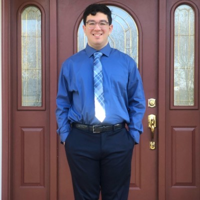

Anthony Spano's Portfolio

Fun Facts about Anthony
- • I was born in Port Jefferson Station, New York.
- • I graduated from Comsewogue High School in 2022.
- • I went to Suffolk County Community College for 2 years and graduated with an Associate's Degree in Computer Information Systems.
- • I am currently on my Senior Year at Farmingdale State College. I am majoring in Compputer Programming and Information Systems.
- • I want to work in the Information Technology field, although I am not sure what I want to specalize in yet.
- • Some of my greatest accomplishments throughout college include making a calender application in my Software Engineering class, and interning with Stony Brook.